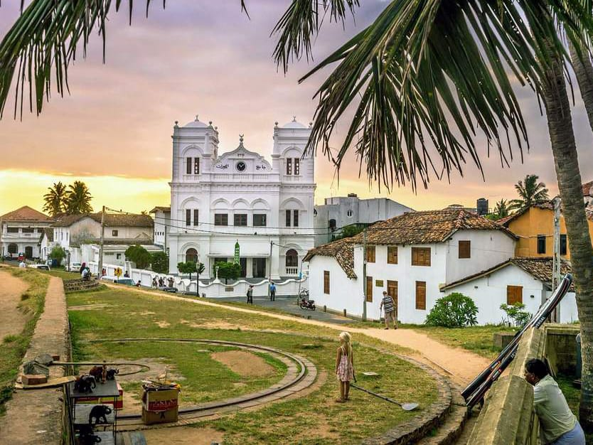

02.Ella
Ella is a peaceful small village in the middle of a beautiful green countryside, with spectacular views.

03.Galle
Galle Is a Capital City Of The Sothern Province.
01.Colombo
July,14
01.Kandy
Kandy, the cultural of Sri Lanka, a World Heritage Site sits pretty in a valley surrounded by rings of mountains, 115km away from the seaport Colombo.
01.Nuwara Eliya
July,14
01.Yala National Park
July,14
01.Udawalawe National Park
July,14